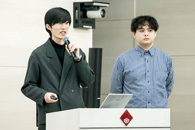

Activities
Conferences, workshops, and other engagements.
Academic
-
Personnel Economics Workshop
Ranking Japanese Firms Using Revealed Preference
-
CTW Summer Camp 2026
Promotion Hierarchies: The Role of Bosses’ Referrals
-
AASLE Conference 2026
Ranking Japanese Firms Using Revealed Preference
Non-Academic
-

EMIRA Business Contest 2024
with Hikaru Kurahashi. Energy Intercollegiate Business Contest, organized by EMIRA Editorial Committee and Waseda University PEP. 2024. Media
Excellence Award.
-
Data Scientist Intern, Data Chemistry Inc.
October 2022 – February 2023.
Data analysis for advertising and marketing using Python and SQL; contributed to new product development.